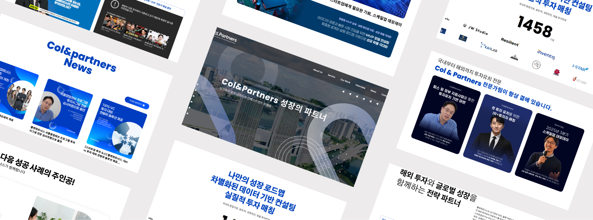

브랜드 신뢰도를 강조하기 위해 정제된 레이아웃과 절제된 비주얼 요소를 기반으로, 콘텐츠 전달에 집중한 클린하고 직관적인 디자인
프리텐다드
Poppins
워드프레스 기반 퍼블리싱 구조 설계
반응형 웹 구현
CMS 연동 고려 마크업
인터랙션 및 사용자 경험 개선
유지보수 및 확장성 고려
워드프레스 구조상 디자인 자유도 제한 존재
관리자 입력 데이터에 따라 레이아웃 깨짐 발생 가능성 있음
고정 디자인과 동적 콘텐츠 간 충돌 발생
-> 콘텐츠 영역 최소/최대값 설정
-> 텍스트 줄바꿈 및 overflow 대응 처리
-> 유동 레이아웃 기반으로 구조 재설계
-> 관리자 입력 가이드 기준 정의
-> 컴포넌트 단위로 UI 분리
관리자 입력 콘텐츠 길이에 따라 모바일 UI 깨짐
이미지 비율 불균형 문제 발생
텍스트 overflow 및 줄바꿈 문제 발생
-> clamp() 활용한 유동 폰트 사이즈 적용
-> object-fit으로 이미지 비율 유지
-> line-height 및 word-break 설정
-> 콘텐츠 영역 max-width 제한
-> 모바일 기준 레이아웃 재정의
동일한 구조의 섹션 반복 사용
수정 시 전체 페이지 영향 발생
유지보수 비효율 발생
-> 공통 컴포넌트화 진행
-> 템플릿 구조 분리 (partial 구조 활용)
-> CSS 재사용 구조 설계
-> 클래스 네이밍 일관성 유지
-> 반복 구조 최소화
본 프로젝트는 워드프레스 기반으로 진행된 작업으로, 단순 퍼블리싱을 넘어 CMS 구조를 고려한 UI 설계 역량을 강화할 수 있었다. 특히 정적인 디자인을 그대로 구현하는 것이 아니라, 관리자가 입력하는 다양한 콘텐츠에도 대응 가능한 유연한 구조를 설계했다는 점에서 실무적인 경험을 확보했다.
퍼블리싱 과정에서는 콘텐츠 길이, 이미지 비율 등 동적으로 변화하는 요소들로 인해 레이아웃이 깨지는 문제를 경험했으며, 이를 해결하기 위해 유동적인 레이아웃과 반응형 구조를 재설계하는 방식으로 접근했다. clamp()를 활용한 타이포그래피 설정과 object-fit 기반 이미지 처리 등을 적용하여, 다양한 환경에서도 안정적인 UI를 유지할 수 있도록 구현했다.
또한 반복되는 UI 구조를 컴포넌트 단위로 분리하고, 워드프레스 템플릿 구조에 맞게 설계함으로써 유지보수성과 확장성을 동시에 고려한 퍼블리싱을 진행했다. 이를 통해 단순 구현을 넘어, 운영과 관리까지 고려한 실무형 퍼블리싱 역량을 강화했다.
결과적으로 본 프로젝트는 퍼블리셔로서의 구현 능력뿐 아니라, CMS 환경에 대한 이해와 함께 프론트엔드 개발로 확장 가능한 구조 설계 능력을 확보한 작업이었다.